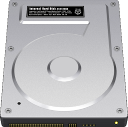

<div class="container p-0 m-0 d-block">
    <div id="fileFolerContents" class="d-flex flex-wrap justify-content-start text-center m-0 p-0" style="overflow:hidden">
        <a onclick="selectIcon(this)" ondblclick="openFilePath('')" class='d-block text-center btn btn-light'><div class='text-center'>iDrive</div></a>
    </div>
</div>